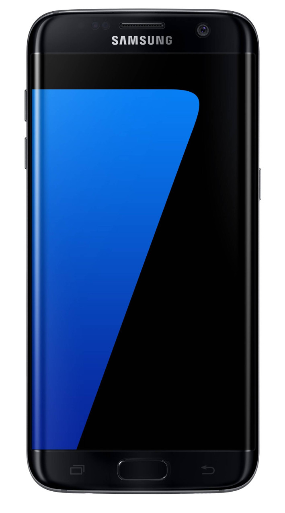

Samsung Galaxy S7 Edge (samsung-hero2lte)
Jump to navigation
Jump to search
|
 Samsung Galaxy S7 Edge | |
| Manufacturer | Samsung |
|---|---|
| Name | Galaxy S7 edge |
| Codename | samsung-hero2lte |
| Released | 2016 |
| Category | testing |
| Original software | Android |
| Original version | 6.0 on Linux 3.18.14 |
| Hardware | |
| Chipset | Samsung Exynos 8890 Octa |
| CPU | Exynos M1 (4x @ 2.3GHz) and ARM Cortex-A53 (4x @ 1.6GHz) |
| GPU | ARM Mali-T880 MP12 |
| Display | 1440x2560 AMOLED |
| Storage | 32 GB (upgradeable via microSD) |
| Memory | 4 GB |
| Architecture | aarch64 |
| Type | handset |
{kind=link}
| USB Networking |
Works
|
|---|---|
| Flashing |
Partial
|
| Touchscreen |
Works
|
| Display |
Works
|
| WiFi |
Works
|
| FDE |
Broken
|
| Mainline | |
| Battery |
Works
|
| 3D Acceleration | |
| Audio | |
| Bluetooth | |
| Camera | |
| GPS | |
| Mobile data | |
| SMS | |
| Calls | |
| USB OTG / USB-C Role switching | |
| NFC | |
| Accelerometer | |
|---|---|
| Magnetometer | |
| Ambient Light | |
| Proximity | |
| Hall Effect | |
| Barometer | |
| Power Sensor | |
| Camera Flash | |
|---|---|
| Keyboard | |
| Touchpad | |
| USB-A | |
| HDMI/DP | |
| Ir TX | |
| Ir RX | |
| Stylus | |
| Haptics | |
| Ethernet | |
| FOSS bootloader | |
Contributors
- Ramjam2008
Maintainer(s)
- WilliamO7
Users owning this device
- Baasm (Notes: still stock)
- Crashniels (Notes: Stock)
- Deviled (Notes: Screen absolutely obliterated, modded)
- Igor121 (Notes: pink line)
- Misopog (Notes: Like new, unlocked, LineageOS 20)
How to enter Download/Odin mode
When the device is fully powered off, hold Power, Home and Volume Down for a few seconds.
A (turquoise) download mode warning screen should appear, press Volume Up to confirm.
Installation
It is recommended to sideload an android recovery zip through TWRP for the easiest process, since heimdall freaks out about the subpartitions in SYSTEM and won't move past ~7%.
You can use pmbootstrap flasher flash_kernel and then use netcat or similar to flash SYSTEM, but this is a longer and more redundant method.
$ pmbootstrap install --android-recovery-zip
$ pmbootstrap flasher --method=adb sideload
What is tested and works
- The kernel
- USB Networking (you might have to set its MAC address beforehand though)
- SSH
- Telnet in the initramfs
- Wi-fi
- Almost all display environments with software rendering (yes, even plasma mobile works, albeit slowly and with rubbish dpi scaling)
- As an aside, wayland based environments currently crash after a few minutes due to an unknown issue.
Quirks
- Exynos (at least modern exynos) has a different dt.img format to Qualcomm devices, requiring a special dtbtool to go along with it. It has been packaged as exynos-dtbtool (pmaports!527) and is being used to generate the device tree blob.
- Camera drivers (Samsung FIMC-IS2) (and accompanying flash LED drivers, controlled by a Samsung PMIC) needed to be disabled in the kernel to prevent boot loops.
To get working
- FDE with osk-sdl - Tested and interface works, but crashes and bootloops attempting any decryption
- Halium support
- Mainlining (should probably help the android community too)
See also
- pmaports!179 initial MR
- pmaports!631 second MR (new kernel + wifi)
- pmaports!3709 third MR (new repo + wifi fix)
- 8890/8895 kernel fork
- LineageOS device page